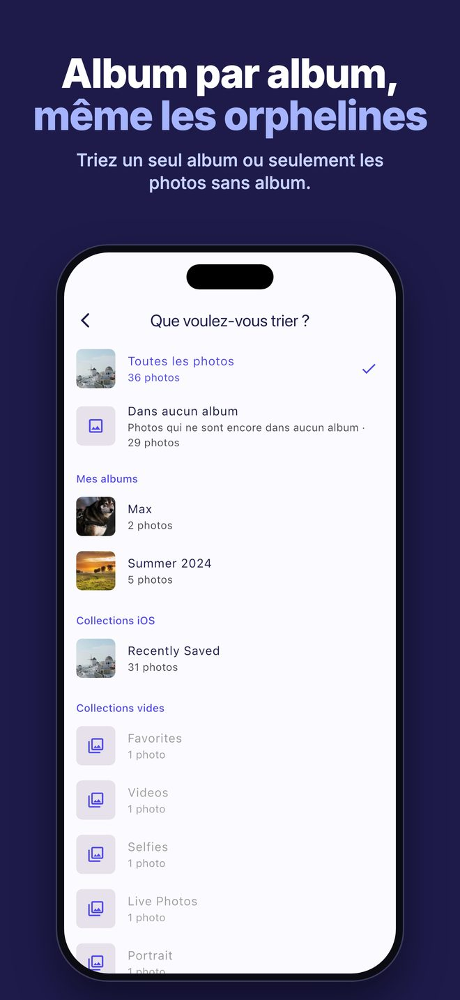
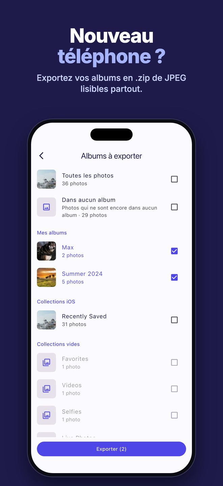
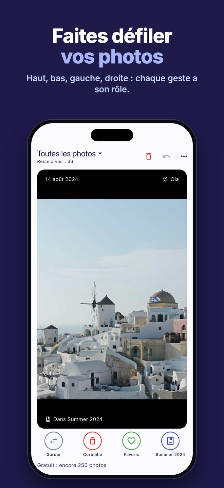
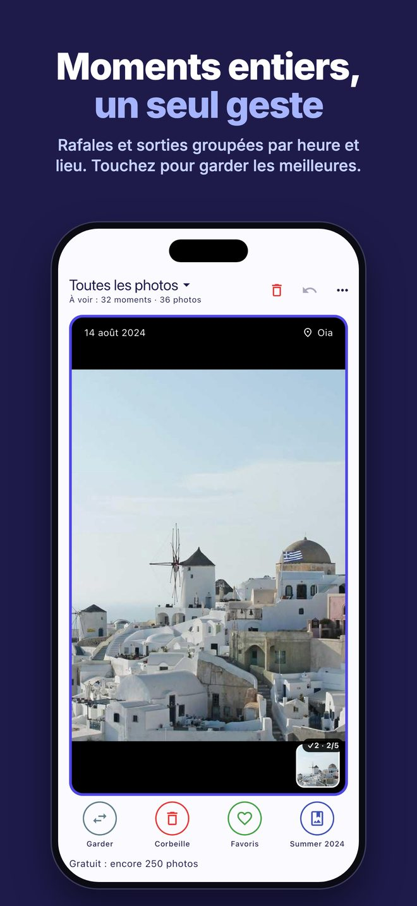
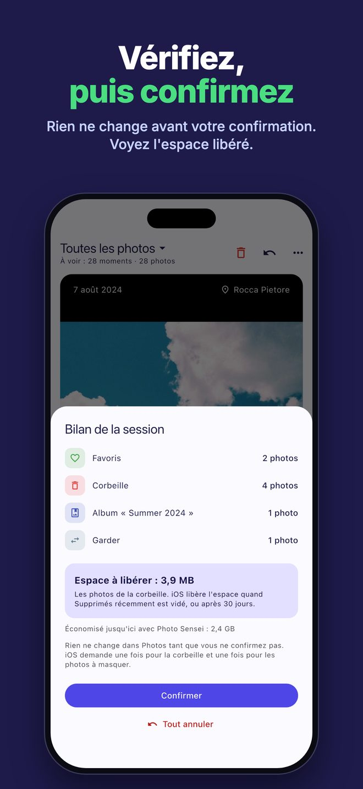

Album par album
Triez toute la photothèque, seulement les photos sans album ou un seul album. Chaque photo indique ses albums.
Photo Sensei vous montre vos photos une par une. Balayez vers le haut, le bas, la gauche ou la droite : vous choisissez l'action de chaque direction.
Télécharger dans l'App StoreGratuit pour 250 photos · puis 0,99 € une seule fois · sans abonnement

Triez toute la photothèque, seulement les photos sans album ou un seul album. Chaque photo indique ses albums.

Exportez un ou plusieurs albums dans un seul .zip, un dossier par album, en JPEG lisible partout, même sous Windows.

Garder, ajouter aux Favoris, à la corbeille, à un album, retirer d'un album ou masquer. Tout peut être annulé.

Les photos prises à quelques minutes d'intervalle au même endroit forment une seule carte. Touchez celles à garder : le geste ne déplace qu'elles.

Rien ne change avant la confirmation du bilan de la session, qui indique aussi l'espace libéré.
Photo Sensei fonctionne entièrement sur votre iPhone. Ni compte, ni cloud, ni suivi, ni pub : « Aucune donnée collectée ».
Non. Chaque geste n'est qu'un choix : rien ne change dans Photos avant que vous confirmiez le bilan de la session. Les photos de la corbeille vont ensuite dans Suppressions récentes, récupérables 30 jours.
Non. Les 250 premières photos sont gratuites, puis un seul achat intégré (0,99 € en France) débloque l'app pour toujours.
Jamais. Pas de compte, rien ne nous est envoyé.
Des copies JPEG des albums choisis, un dossier par album.
Un problème, une idée ? Écrivez à info@optiapp.it.